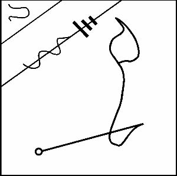

NEBO’nun sayısı on ikidir ve işte onun mührü:

Venüs’ün Tanrıçası, Babilliler’in ISHTAR dedikleri en muhteşem kraliçe INANNA’dır. Tutkunun, işaretine ve gökyüzünde görüldüğü saate bağlı olarak hem Aşkın hem de Savaşın Tanrıçasıdır. Aslanların eşlik ettiği, çok güzel bir Genç kız olarak görünür ve Ay Tanrısı NANNA ile birlikte karmaşık bir astral doğa içinde rol alır. Fikir birliğine vardıklarında, yani onların iki gezegeni gökyüzünde elverişli şekilde uyumlu olduklarında, bu, iki sungu-kadehinin Tanrıların tatlı şarabının dünyaya yağması için gökyüzünde özgürce kırılmasıdır. Ve sonra büyük bir mutluluk ve neşe gelir. Bazen zırhı içinde görünür ve böyle zamanlarda kız kardeşi, dehşetli Kraliçe, KUR’lu ERESHKIGAL’in entrikalarına karşı en muhteşem koruyucudur. INANNA’nın İsmi ve Sayısı ile hiçbir Rahibin Yeraltının derinliklerinde yürümeye korkmasına gerek yoktur, çünkü Onun zırhı ile kuşanmışken tıpkı Tanrıça’ya benzer. Ben de yer kabuğunun altında açılan iğrenç çukurlara inip demonlara böyle kumanda etmiştim.
Benzer şekilde Aşkın da Tanrıçası’dır ve hak eden ve uygun kurbanı veren her erkeğe elverişli bir gelin ihsan eder.
AMA ŞUNU BİL Kİ INANNA KARARI KENDİ KENDİNE ALIR VE BU BİR KEZ SEÇİLDİ Mİ HİÇ KİMSE BİR BAŞKA GELİN ALAMAZ.
Onun rengi en saf beyazdır. Tezahürü Bakır madeninde ve aynı zamanda bir tarladaki en güzel çiçeklerde ve bir savaş meydanında, o meydanın en parlak çiçeği olan en üzücü ölümdedir. Onun kapısı, takip eden ritüellerde geçmen gereken ve orada kalmayı gönülden isteyeceğin Üçüncü kapıdır, ama yüzünü daha öteye giden yola dön, çünkü Tanrıça seni seçmedikçe, senin gerçek amacın budur. Işıkların Merdiveninde onun, eskiden Babil’de ve UR’da inşa edilen, Basamağı beyazdır.
Bu, onun, Venüs gökyüzünde yükseldiğinde, etrafta oluşumunu kimsenin görmediği bir anda Bakır’a oyman gereken mührüdür.
Bittiğindeyse, en saf ipeğe sarılmalı ve yalnızca ihtiyaç baş gösterdiği herhangi bir zamanda yerinden çıkarılmak üzere güvenli şekilde uzakta tutulmalıdır.